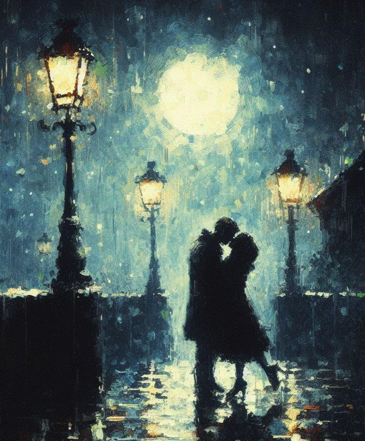

The "Eternal Lovers" project was born out of my belief in the enduring power of love (I know, it sounds cheesy). In a world often defined by transience and impermanence, I felt like creating a series that celebrated the timeless nature of human affection. Through my digital paintings, I aimed to provoke a sense of nostalgia and hope, reminding viewers that although life has many uncertainties, love remains an unwavering force, capable of transcending the boundaries of time and leaving a permanent mark on our collective consciousness.
Love, in its purest form, embodies an intrinsic human longing for connection and understanding. My project tried to encapsulate this sentiment, urging viewers to reflect on their own experiences and perceptions of enduring love, creating a deeper appreciation for the profound impact it has on our lives. Im inviting audiences to immerse themselves in a narrative that speaks to the heart of the human condition.
As I dove deeper into the "Eternal Lovers" project, I found myself studying nuances of human relationships and the profound emotional tapestry they weave. Each painting became a canvas for me to portray not only the ecstasy of love's euphoric highs but also the profound solace it offers during life's inevitable trials. It became apparent that the essence of eternal love lies not only in its grand gestures but in the quiet, constant support it provides, serving as a beacon of hope in the darkest of times.
Throughout the creative process, I tried to create my paintings with an authentic, raw emotion that would resonate with viewers on a deep level. I drew inspiration from personal anecdotes, folklore, and timeless tales of love that have transcended generations.
Love endures beyond the limitations of mortal existence, uniting us all in a shared experience of deep, timeless affection.